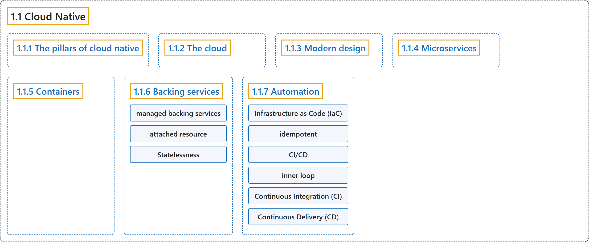

1.1 Cloud Native
Classification

Glossary
| Term | Definition | 中文翻译 | Source |
|---|---|---|---|
| 1.1 Cloud Native 云原生 |
"Cloud-native architecture and technologies are an approach to designing, constructing, and operating workloads that are built in the cloud and take full advantage of the cloud computing model." | 云原生架构和技术是一种设计、构建和运行工作负载的方法，这些工作负载在云中构建，并充分利用云计算模型。 | Microsoft, 2023, "What is Cloud Native?", para. 3 |
| 1.1.1 The pillars of cloud native 云原生的支柱 |
"The speed and agility of cloud native derive from many factors. Foremost is cloud infrastructure. But there's more: Five other foundational pillars shown in Figure 1-3 also provide the bedrock for cloud-native systems." | 云原生的速度和敏捷性来自许多因素。首先是云基础设施。但还不止这些：图 1-3 中的另外五根基础支柱也为云原生系统提供了基石。 | Microsoft, 2023, "The pillars of cloud native", para. 1 |
| 1.1.2 The cloud 云 |
(Definition pending) | （定义待补） | Microsoft, 2023, "The cloud" |
| 1.1.3 Modern design 现代设计 |
(Definition pending) | （定义待补） | Microsoft, 2023, "Modern design" |
| 1.1.4 Microservices 微服务 |
(Definition pending) | （定义待补） | Microsoft, 2023, "Microservices" |
| 1.1.5 Containers 容器 |
(Definition pending) | （定义待补） | Microsoft, 2023, "Containers" |
| 1.1.6 Backing services 支撑服务 |
"Cloud-native systems depend upon many different ancillary resources, such as data stores, message brokers, monitoring, and identity services. These services are known as backing services." | 云原生系统依赖许多不同的辅助资源，例如数据存储、消息代理、监控和身份服务。这些服务被称为支撑服务。 | Microsoft, 2023, "Backing services", para. 1 |
| managed backing services 托管支撑服务 |
"Cloud providers offer a rich assortment of managed backing services. Instead of owning the service, you simply consume it." | 云提供商提供丰富多样的托管支撑服务。你不必拥有这项服务，只需使用它。 | Microsoft, 2023, "Backing services", para. 4 |
| attached resource 附加资源 |
"A best practice is to treat a backing service as an attached resource, dynamically bound to a microservice with configuration information (a URL and credentials) stored in an external configuration." | 最佳做法是把支撑服务当作附加资源，通过存放在外部配置中的配置信息（URL 和凭据）动态绑定到微服务。 | Microsoft, 2023, "Backing services", para. 6 |
| Statelessness 无状态 |
(context) "On a final thought, backing services also promote the Statelessness principle from the Twelve-Factor Application, discussed earlier in the chapter." | （语境）最后，支撑服务还促进了十二要素应用中的无状态原则，本章前面已经讨论过。 | Microsoft, 2023, "Backing services", para. 10 |
| 1.1.7 Automation 自动化 |
"As you've seen, cloud-native systems embrace microservices, containers, and modern system design to achieve speed and agility. But, that's only part of the story. How do you provision the cloud environments upon which these systems run? How do you rapidly deploy app features and updates? How do you round out the full picture?" | 正如你所见，云原生系统采用微服务、容器和现代系统设计来实现速度和敏捷性。但这只是故事的一部分。如何置备云环境，让这些系统在上面运行？如何快速部署应用功能和更新？又如何把整幅图景补全？ | Microsoft, 2023, "Automation", para. 1 |
| Infrastructure as Code (IaC) 基础设施即代码 |
"Enter the widely accepted practice of Infrastructure as Code, or IaC. With IaC, you automate platform provisioning and application deployment." | 这就引出了被广泛接受的基础设施即代码实践，简称 IaC。有了 IaC，你可以自动完成平台置备和应用部署。 | Microsoft, 2023, "Automation", paras. 2–3 |
| idempotent 幂等 |
"Under the hood, IaC is idempotent, meaning that you can run the same script over and over without side effects." | 在底层，IaC 是幂等的，意思是你可以反复运行同一个脚本而没有副作用。 | Microsoft, 2023, "Automating infrastructure", para. 2 |
| CI/CD continuous integration/continuous delivery 持续集成/持续交付 |
"Modern CI/CD systems help fulfill this principle. They provide separate build and delivery steps that help ensure consistent and quality code that's readily available to users." | 现代 CI/CD 系统有助于落实这一原则。它们提供彼此分开的构建和交付步骤，帮助确保代码一致、质量可靠，并随时可供用户使用。 | Microsoft, 2023, "Automating deployments", para. 3 |
| inner loop 内循环 |
"The developer constructs a feature in their development environment, iterating through what is called the "inner loop" of code, run, and debug." | 开发者在自己的开发环境中构建功能，反复经历被称为内循环的过程，即编码、运行和调试。 | Microsoft, 2023, "Automating deployments", para. 5, item 1 |
| Continuous Integration (CI) 持续集成 |
"The push triggers a build stage that transforms the code into a binary artifact. The work is implemented with a Continuous Integration (CI) pipeline. It automatically builds, tests, and packages the application." | 推送会触发一个构建阶段，把代码转换成二进制制品。这项工作由持续集成（CI）流水线完成。它自动构建、测试并打包应用。 | Microsoft, 2023, "Automating deployments", para. 5, item 3 |
| Continuous Delivery (CD) 持续交付 |
"The release stage picks up the binary artifact, applies external application and environment configuration information, and produces an immutable release. The release is deployed to a specified environment. The work is implemented with a Continuous Delivery (CD) pipeline." | 发布阶段取得二进制制品，应用外部的应用配置和环境配置信息，生成一个不可变的发布版本。该版本被部署到指定的环境。这项工作由持续交付（CD）流水线完成。 | Microsoft, 2023, "Automating deployments", para. 5, item 4 |
References
Microsoft. (2023, December 14). What is Cloud Native? Microsoft Learn. Retrieved November 11, 2026, from https://learn.microsoft.com/en-us/dotnet/architecture/cloud-native/definition